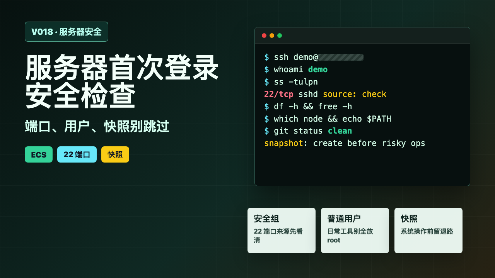
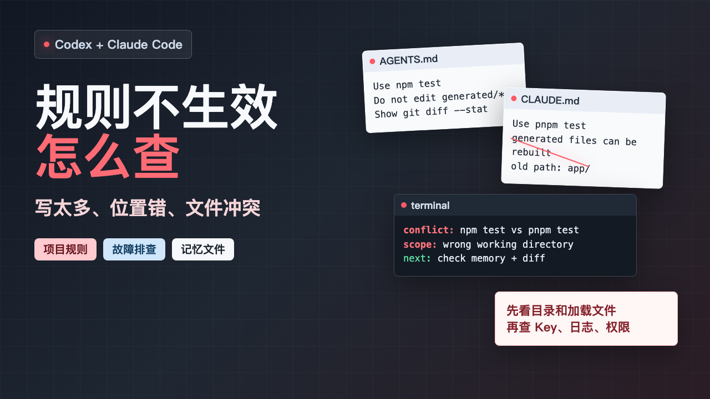
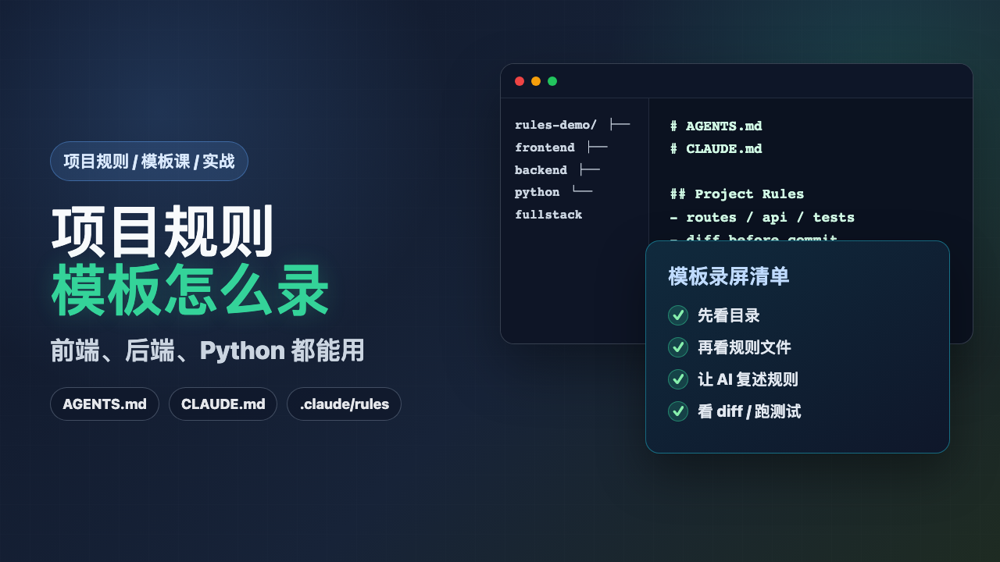
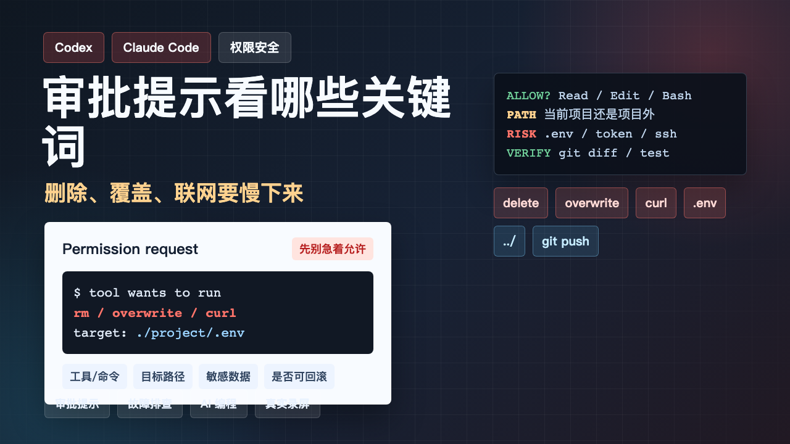
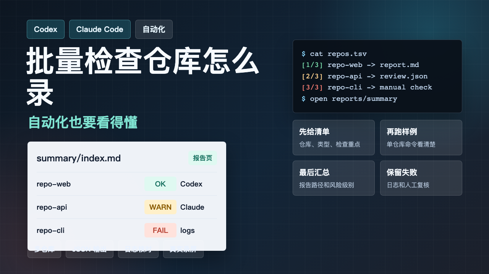
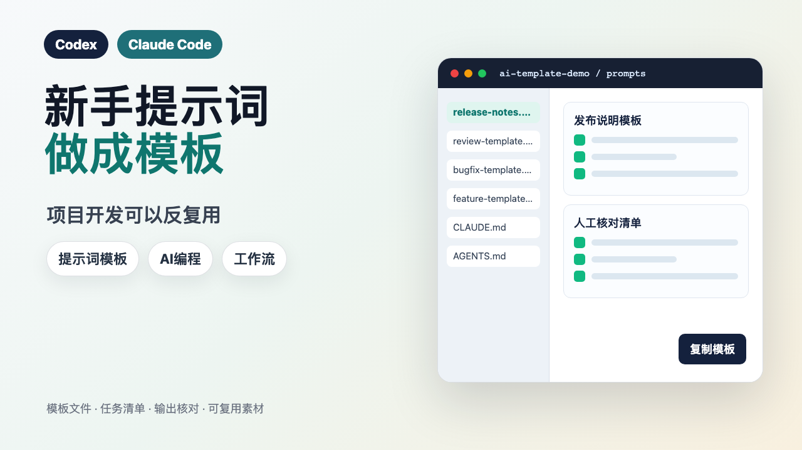
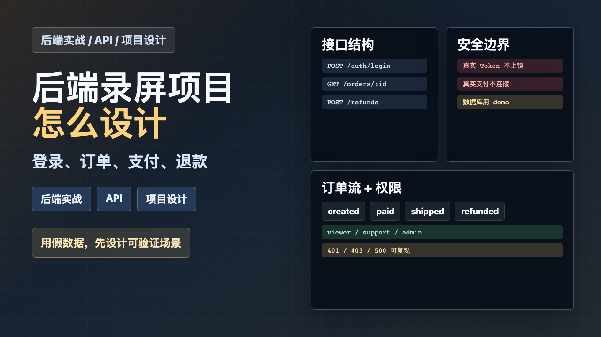
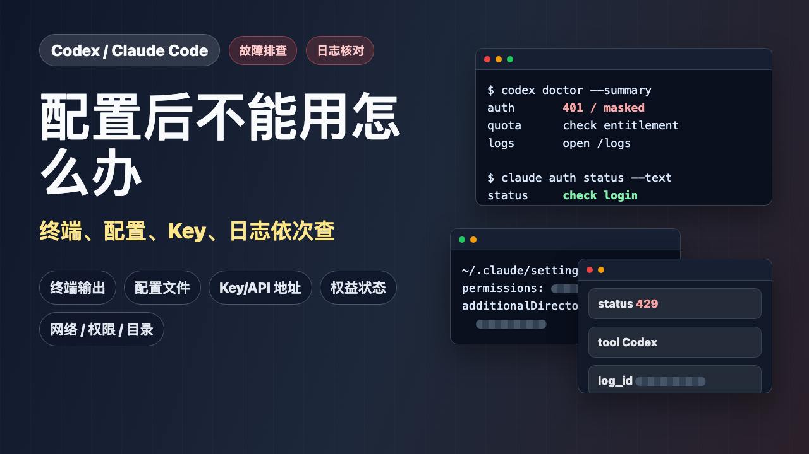

V001-V058网页图文博客GitHub / Gitee Pages
积木代码助手
推广图文博客
58 篇 AI 编程工具推广图文已经整理成可直接浏览的网页文章。每篇都包含文字、封面、流程图和 PPT 步骤图，适合先在线预览，再复制到公众号、B站、小红书、抖音图文等平台。


V003 · 图文博客
Claude Code Key 配置失败先查 Key、地址和权限
打开即可看完整图文版文章，也可复制 Markdown 到其他平台。


V009 · 图文博客
Windows 新手先检查 Node.js、Git、VS Code
打开即可看完整图文版文章，也可复制 Markdown 到其他平台。


V014 · 图文博客
Linux 服务器上安装 Claude Code 到第一次提问
打开即可看完整图文版文章，也可复制 Markdown 到其他平台。


V017 · 图文博客
SSH 登录阿里云服务器：Windows、Mac、Linux 三种入口
打开即可看完整图文版文章，也可复制 Markdown 到其他平台。



V020 · 图文博客
Codex CLI 常用命令总览：help、login、doctor、update
打开即可看完整图文版文章，也可复制 Markdown 到其他平台。


V024 · 图文博客
Claude Code 常用命令总览：help、auth、doctor、update
打开即可看完整图文版文章，也可复制 Markdown 到其他平台。








V034 · 图文博客
GitHub、数据库、浏览器、Playwright MCP 适合做什么
打开即可看完整图文版文章，也可复制 Markdown 到其他平台。

V035 · 图文博客
Codex 和 Claude Code 的 Skill、Agent、插件怎么区分
打开即可看完整图文版文章，也可复制 Markdown 到其他平台。




V040 · 图文博客
VS Code、Cursor、Windsurf、JetBrains 里怎么配合 AI 编程工具
打开即可看完整图文版文章，也可复制 Markdown 到其他平台。





V047 · 图文博客
Claude Code 前端实战：读项目、修 Bug、新增筛选项
打开即可看完整图文版文章，也可复制 Markdown 到其他平台。


V050 · 图文博客
Claude Code 后端实战：读接口、定位 500、补测试
打开即可看完整图文版文章，也可复制 Markdown 到其他平台。






V056 · 图文博客
Codex 和 Claude Code 权限、MCP、记忆配置有什么不同
打开即可看完整图文版文章，也可复制 Markdown 到其他平台。


V058 · 图文博客
Codex ／ Claude Code 适合录屏展示的高频场景
打开即可看完整图文版文章，也可复制 Markdown 到其他平台。